異常の記録
和風の美学と POV ホラーを掛け合わせた一人称ホラー映像の全制作工程。 コンセプトアートから造形、プロシージャル生成、レンダリング最適化、コンポジット、 そして音響設計まで — 6 つの視点から本作の技術的な舞台裏を記録する。
プロダクションパイプライン
本作は各工程において複数のソフトウェア・ミドルウェアを使用している。 リアルタイムプレビューが可能な Unreal Engine から、造形・シミュレーションに特化した Maya / Blender / Houdini、そして仕上げの NukeX / After Effects / Premiere Pro まで、 それぞれの工程で最適なツールを選び、明確な理由をもって使い分けた。
コンセプトアート Unreal Engine 5.8
コンセプトアート制作は Unreal Engine 5.8 で行った。ここでのコンセプトアートは最終的な絵作りを決めるものというより、
モデルの雰囲気と作品の空気感をプレビューするためのものである。
レンダリング速度を考慮し、Unreal Engine 5.8 を中心とするワークフローも検討したが、Blender Geometry Nodes を積極的に使用する方針を決めたため見送った。
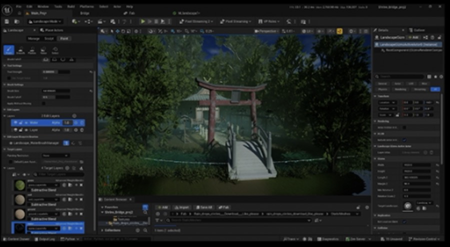
背景メイキング Maya / Blender
背景メイキングは主に Autodesk Maya と Blender で行った。プロシージャルモデリングは Blender Geometry Nodes、それ以外はすべて Maya で制作している。 考慮したのは Geometry Nodes の柔軟性と Maya のデータ厳密性のバランスである。 最終的なシーンメイキングと撮影は Cycles と EEVEE を使うため Blender で行い、 Maya 制作物は FBX 形式で受け渡した。

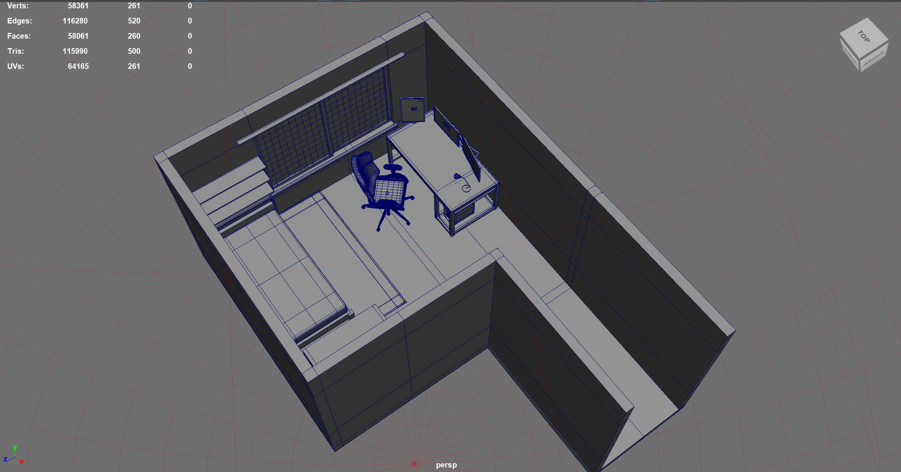
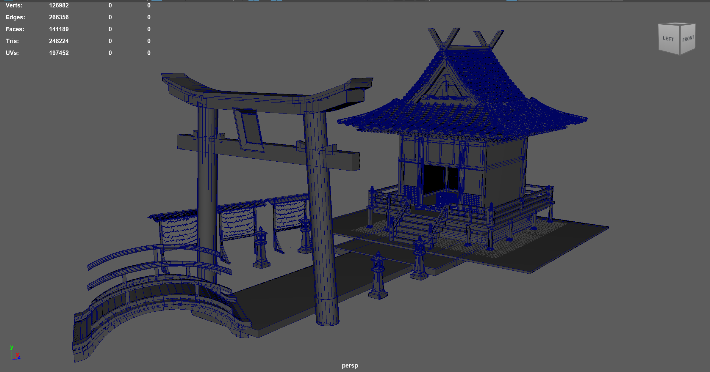
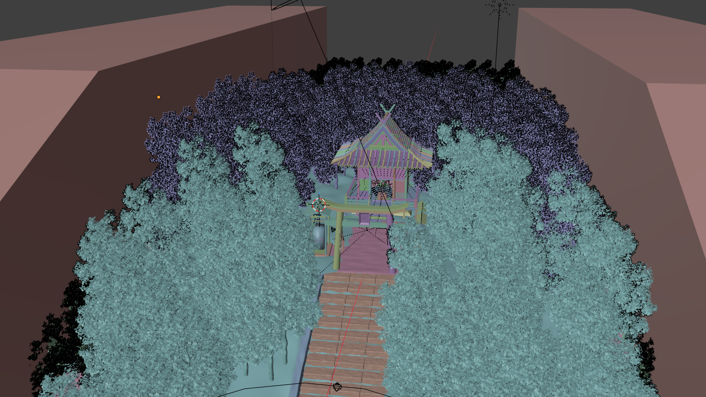
テクスチャ制作 Substance 3D Painter / Sampler
テクスチャ制作は主に Substance 3D Painter で行った。Maya で UV 展開したモデルを塗り、 4K 高精度テクスチャとして書き出している。神社本殿や手水など規模が大きい、あるいはクローズアップのあるオブジェクトは UDIM タイルワークフローを採用し解像度を確保した。自然物のテクスチャは独自の 3D 表面スキャンデータを Substance 3D Sampler で処理したものである。
クリーチャー制作 Blender / Marvelous Designer / VRoid Studio
クリーチャー（バケモノキャラクター）は Blender のほか、Marvelous Designer と VRoid Studio を用いた。 最終映像でキャラクターの身体自体はほとんど映らず、あくまでクロスシミュレーションのコリジョン対象であるため、 高度な独自モデルは不要と判断し VRoid Studio で素体を生成するアプローチを採った。 頭部は Blender のスカルプトモードで制作し、彼岸花はジオメトリノードでプロシージャルに生成している。
リギングとアニメーションを Blender で行った後、Alembic 形式で Marvelous Designer にインポートして衣装のクロス演算を実行。 結果をモデルにベイクし、再び Alembic で Blender に戻して撮影した。


撮影〜コンポジット〜編集 Blender → NukeX → After Effects → Premiere Pro
Blender でカメラ・ボーンアニメーションを設定し、出力パスをコンポジットノードで定義、 Multi-layer OpenEXR 形式で出力した。大量のパスを同一ファイルに格納できる点を評価している。 書き出されたレンダリングデータは NukeX で合成し、16-bit PNG で書き出したのち Adobe After Effects でテンポなどを微調整した。NukeX よりも線形的なタイム編集が得意な点が採用理由である。 最終的に視覚的無劣化の Apple ProRes 4444 XQ で書き出し、Adobe Premiere Pro で最終編集を行った。

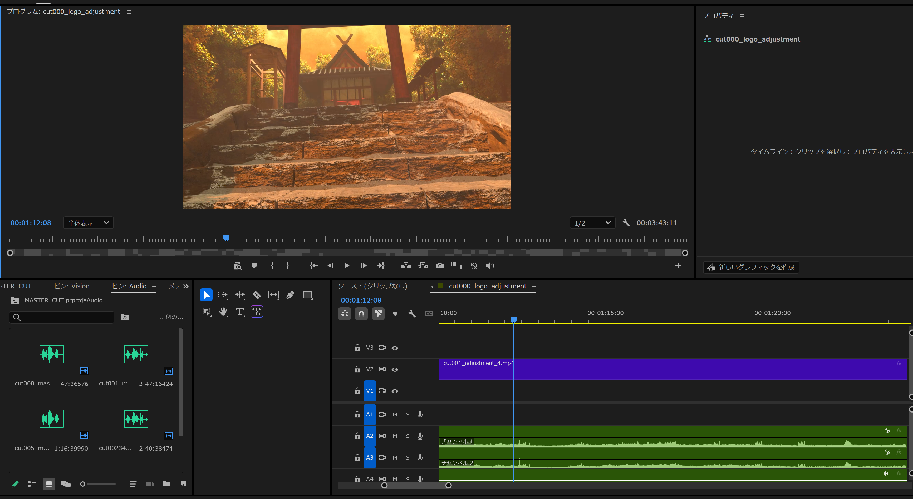
音響 REAPER / Audacity / Adobe Audition / dearVR Pro 2
音響は軽量さと柔軟性を考慮し DAW として REAPER を採用、オートメーション・ミキシング・マスタリングを行った。 初歩的な波形編集は Audacity、デノイズ処理や映像とのタイミング合わせには Adobe Audition を使用。 音声の奥行き感と空間的な説得力を上げるため dearVR Pro 2 プラグインを採用している（詳細は 06 章）。
美術、造形とルックデヴ
本作は「日常における非日常」による「驚きの演出」を、ホラーの「異常存在の日常空間への侵入」と解釈し、 和風の美学を生かした POV ホラーを制作方針とした。
a. コンセプトアート
モデルの雰囲気と作品の空気感をプレビューするための土台として、01 章で紹介した Unreal Engine による リアルタイムコンセプトアートが、以下の素材制作・演出設計すべての起点となっている。
b. 素材
独自の美術スタイルを想定通りに再現するため、本制作ではフリー素材など既製の配布物の二次使用をなるべく避けた。 人工物のテクスチャは Substance 3D Painter で手描きし、自然物はサーフェススキャンを行い Substance 3D Sampler で シーム除去や法線調整を施した。現実で再現しにくい有機物のテクスチャは Substance 3D Designer でプロシージャルに生成している。 葉っぱは実際に拾った落ち葉をスキャナーでスキャンし、板ポリゴンに付与した上で剛体物理演算を行った結果である。
なお BlenderKit や Poly Haven のフリー素材を使用した場合は、以下のカスタム化を行った：
- シェーダーによるカラー調整テクスチャをそのまま使わず、Blender のシェーダーノードで色調整を施し、複数テクスチャをブレンドして使用した。
- 距離ベースの LOD木などの背景物は Geometry Nodes でカメラ距離に基づく LOD システムを構築し、画面のポリゴン数を削減した。
音効についても、フリー BGM・効果音の調整に加え、ZOOM V3 マイクを用いた立体音声収録を行った。 実際の山の鳥の鳴き声を収録し調整・混合することで、臨場感のあるアンビエント体験を目指した。


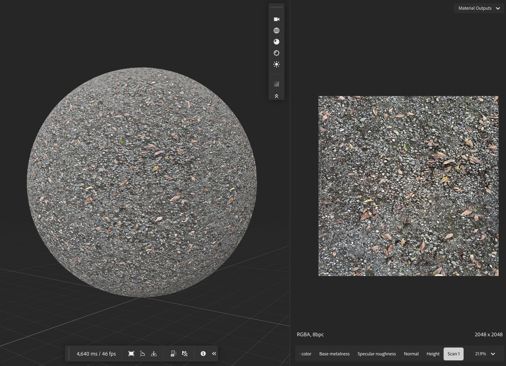

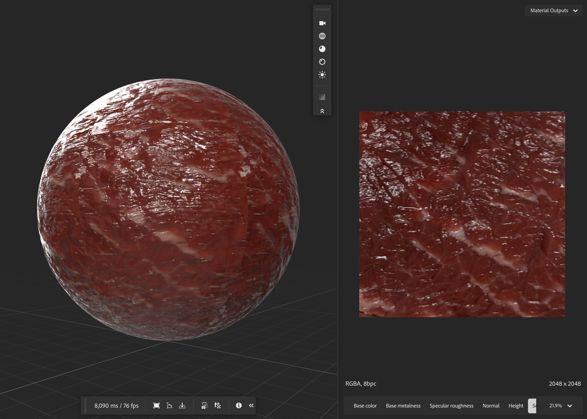
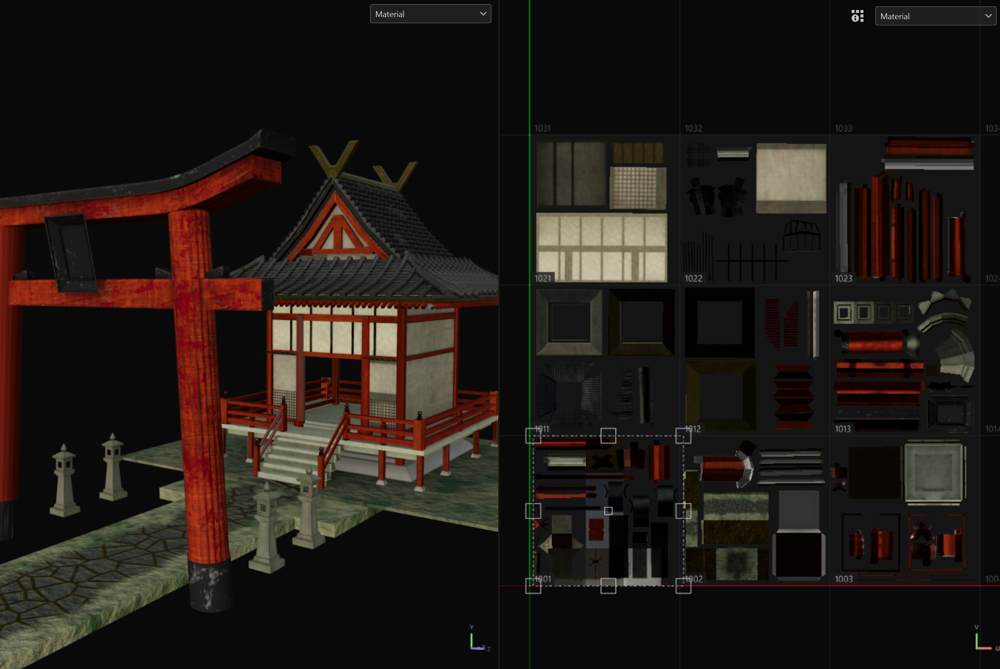
c. 演出 Camera / Omniscient
本作は POV ホラーであり、一人称視点のカメラワークをとる。カメラをいかにキャラクターの目のように調整し、 没入感・臨場感を高めるかが重要であった。
現実のカメラワークを参考にするため、鳥居前に長い階段があり「階段神社」とも呼ばれる福岡県岡垣町の白峯神社でロケハンを実施。 Omniscient アプリとスマートフォン用チェストマウントを用いてバーチャルカメラ撮影とトラッキングを行い、 Alembic 形式で Blender にインポートしてカメラの動きの参考にした。
ただしトラッキングされたカメラワークは揺れや想定外の振動が激しく、そのままの使用は断念。 代わりに簡易な人型リグを構築し、カメラを頭部に親づけすることで一人称カメラワークを再現した。 ボーンアニメーションで大まかな移動を作り、ノイズモディファイアで自然な手ブレを再現。 階段の上下運動が激しいシーンでは Z 軸移動にもノイズを適用した。
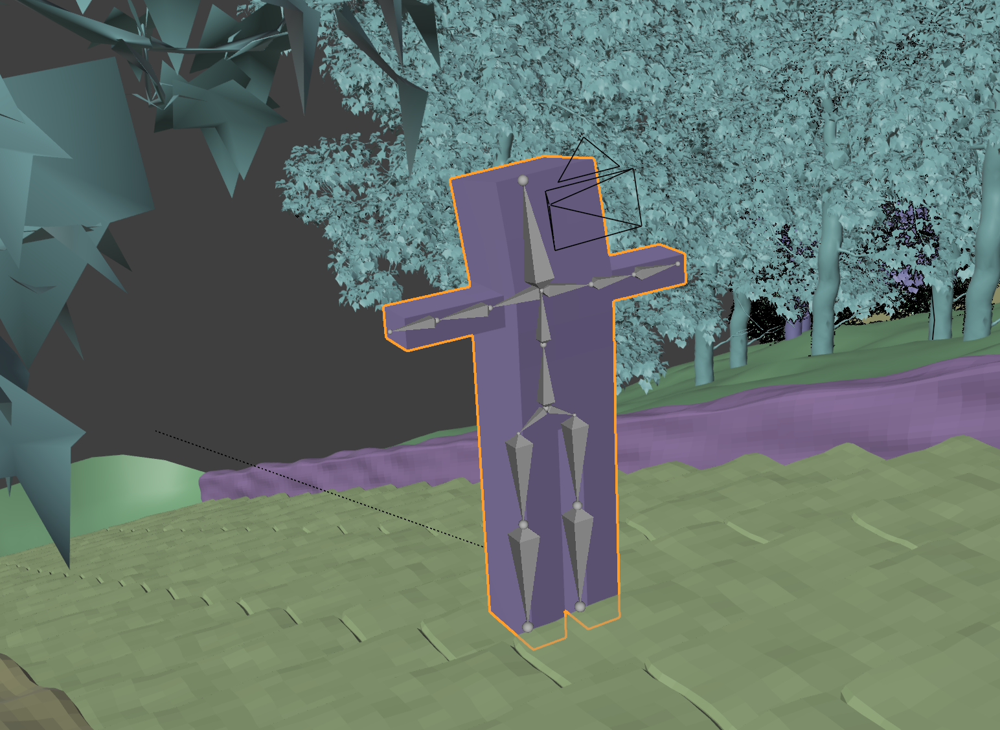
d. クリーチャー造形
説得力のある恐怖感のためには、バケモノキャラクターの造形が非常に重要である。本作は単なる恐怖だけでなく 和風の美学と空気感も重んじるため、「グロテスクの中に美しさ」という一見矛盾する概念を造形する必要があった。
発想法は主に色に基づく連想である。ホラーらしい肉々しい生体組織の赤に、不吉や死を連想させる彼岸花を合わせた。 さらに顔まわりを赤い木で囲み、和風の重みを演出。服装には神社の巫女服を採用し、 「後ろから見れば普通の巫女だが、振り返ったらおぞましいバケモノ」という驚きの演出を狙った。
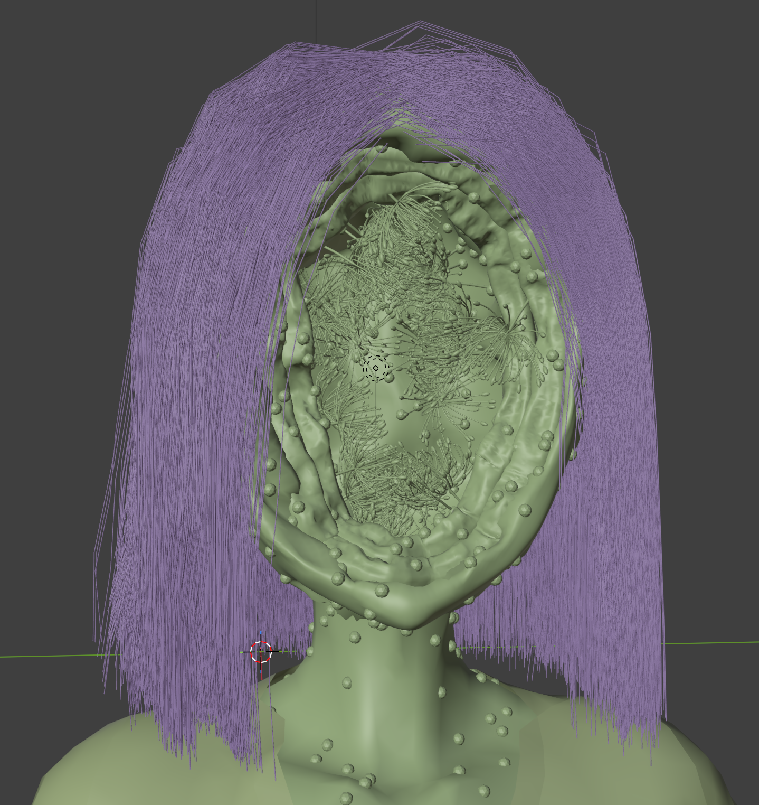
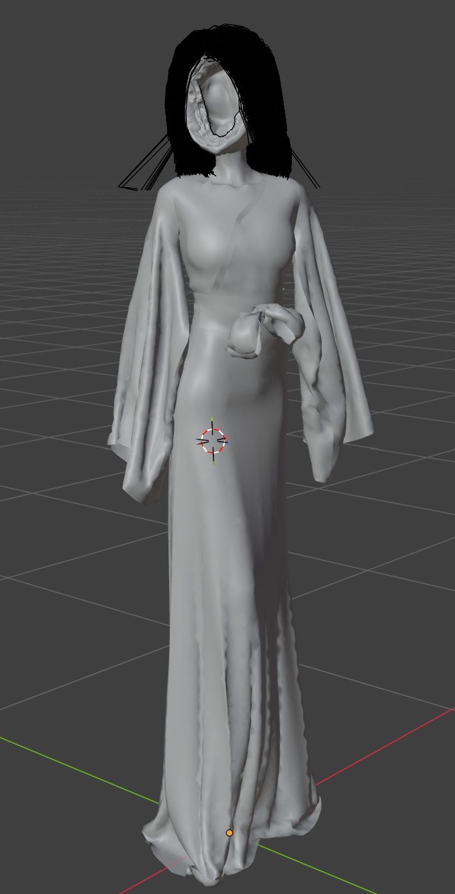

プロシージャル生成
アセットを柔軟に修正・再利用するため、Blender Geometry Nodes をはじめとするプロシージャルモデリングを積極的に採用した。 使い捨てではなく、今後の制作にも活かせる汎用性のあるアセット資産を目指している。
a. Blender Geometry Nodes
本制作で構築したジオメトリノードシステムは 7 種類。すべて汎用性を持ち、 本制作以外にも活用できると考え、Gumroad にフリーアセットとして公開予定である。
プロシージャル生成により、微調整・バリエーション作り・大量配置の手間を省き、リアルタイムフィードバックで ルックデヴのイテレーション速度が大きく向上した。開発の工夫として、すべての Geometry Nodes を メインプロジェクトファイルとは別ファイルで開発している。理由は、意図せぬ変化の回避・巨大ファイルの読み込み時間の節約・ アセットの独立性と再利用性の確保の三点である。
- 彼岸花生成完全プロシージャルに彼岸花を生成。花びらをカーブで定義し、曲率をべき関数で制御することで柔軟な造形を実現。インスタンス複製でレイヤーを作り、球体へのスナップで中心部のシベをリアルに造形した。
- 波紋生成最後の部屋シーンで木製の床が液体化し波紋が広がる表現。頂点オフセットと三角関数で作り、Z 軸の微弱なノイズで有機感を出した。
- 水中拡散床が液体化し血液が広がるシーンをジオメトリ／シェーダーノード併用で制作。波紋中心までの距離をジオメトリノードで計算し float 属性としてシェーダーに渡すことで拡散と混合を実現。
- カメラ LODパフォーマンス改善のため、カメラからの方角と距離に基づいて異なる LOD の木モデルを配置。
- 階段生成傾斜率・段数・各段の高さ・横幅などをリアルタイムで調整・評価できるノードグラフを構築し、背景調整が非常にスムーズになった。
- 侵食表現部屋の壁が赤い生体組織に侵食されるシーン。頂点グループを動的に定義しディスプレースメントを動的適用。頂点グループのデータをシェーダーに渡しマテリアルの拡散も実現。
- つる生成中心から放射状にカーブを配置し、接線に垂直な方向へノイズで大幅にオフセットさせることで、中心に向かって進むつるを表現。
- ロゴアニメーション映像冒頭のロゴアニメーションは、カーブ機能と Geometry Nodes で制作。
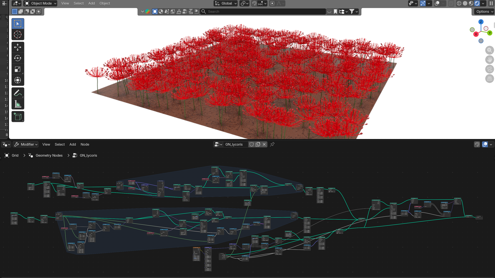


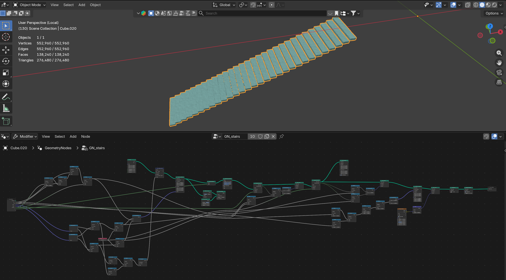


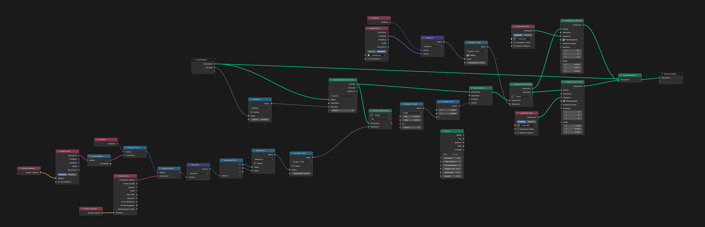
b. Houdini
映像タイトル表示のインクアニメーションは Houdini の流体シミュレーションで実現した。 最初は Blender の Mantaflow ソルバーによるガス流体を検証したが、煙の形状の微調整と水中散乱の自然な表現が困難であった。 ジオメトリノードでボリューム表現を試みたものの、理想的な形状に調整するのは困難であったため、 Houdini の DOP ネットワークによる Pyro シミュレーションに移行した。
buoyancy を低め、turbulence と disturbance を高めに設定することで、水中で散乱していくインクを細かく表現。 色彩調整を素早く行えるよう Houdini からはモノクロでレンダリングし、Karma レンダリングエンジンを用いて OpenEXR 形式で書き出した。


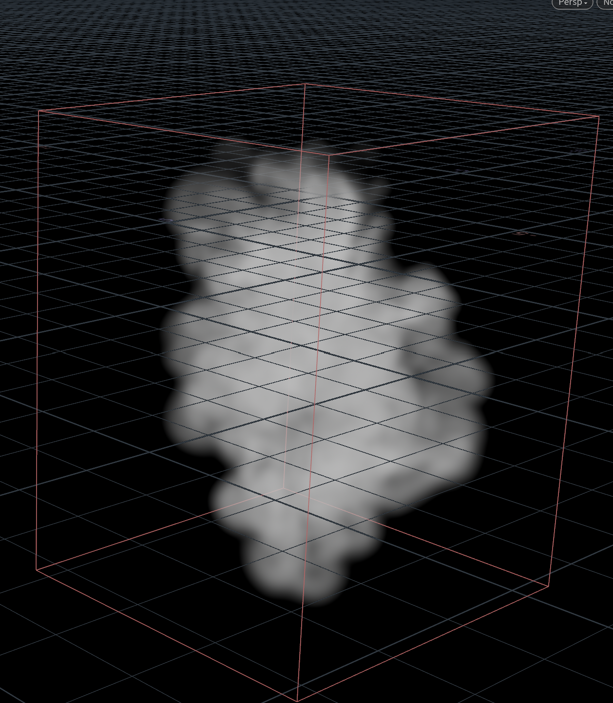
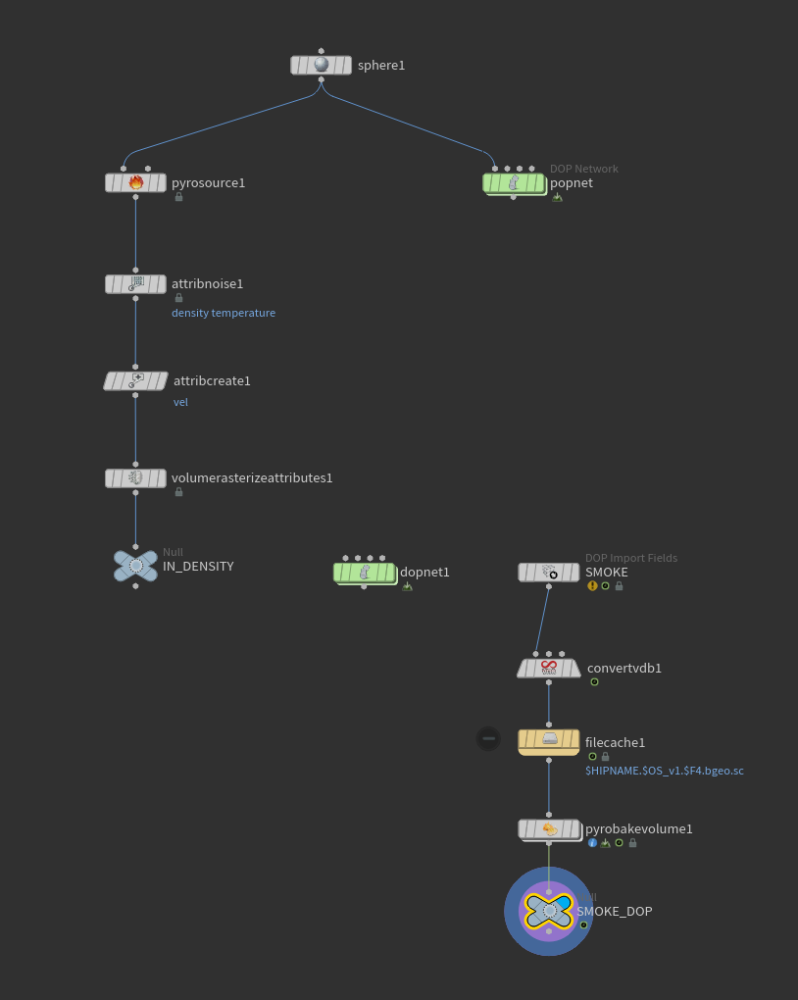
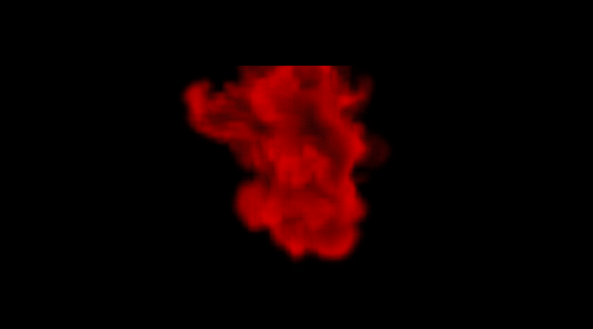

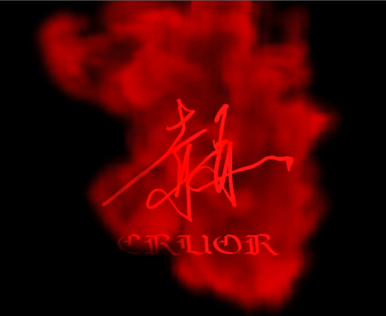
c. プロシージャルマテリアル
世界観に合うマテリアル制作のため、既製テクスチャアセットと独自の 3D スキャンデータを Substance 3D Designer および Blender Shader Nodes で調整・改造・ブレンドした。階段のサーフェスは「泥や砂に覆われている」部分と 「露出しているベースの石」の部分を再現すべく、独自スキャンデータと既製テクスチャの 2 種類の石マテリアルをブレンド。 段の繋ぎ目に溜まる泥を再現するため、別の泥マテリアルも合成している。
バケモノキャラクターのテクスチャは試行錯誤の末に得られた。Blender シェーダーノードのみでは単調で CG 感が出てしまい、 既製の生体組織マテリアルも作品の雰囲気に合わず不採用。最終的に 現実の生体組織の 3D スキャンデータを Substance 3D Designer で改造する手法を考案した。 牛肉を購入し表面筋肉と脂の分布を分析した上でテクスチャスキャンを実施。得られた画像を Sampler で調整し、 Designer で有機的な変形・ポリープ状隆起・血管をプロシージャルに追加した。Voronoi・Noise・Cell Texture を ブレンドすることでランダムで自然な変形を実現し、このマテリアルは後の部屋シーンの侵食表現にも流用された。

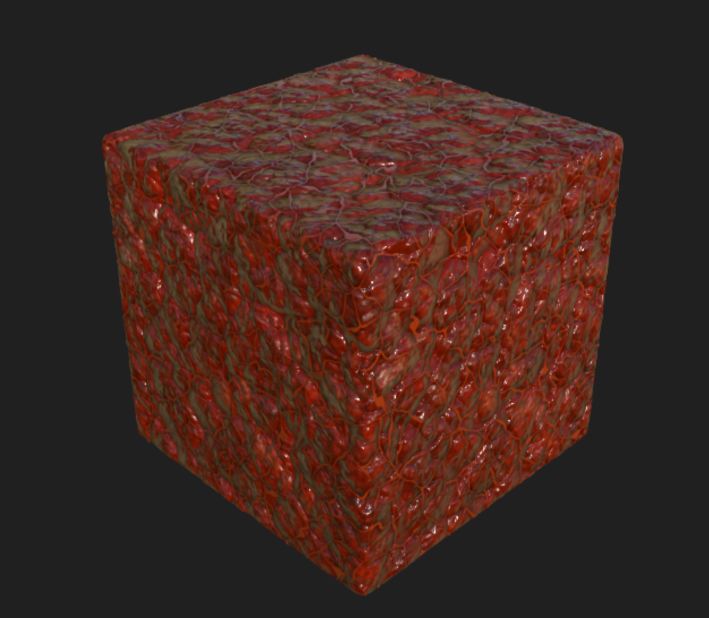

レンダリングと最適化
本作は「どの一フレームを切り取っても絵として飾って恥ずかしくない」映像美を目指しており、 隅々のディテールにこだわった結果、データ量が膨大になった。当初の試算では 1 フレーム 10 分・総データ量 500GB 以上と、締め切りまでに仕上げるのは非現実的であった。 試行錯誤の末、1 フレーム平均 70 秒・総出力データ量 129GB まで最適化している。
使用マシン スペック
a. AOV 分割
最適化してもレンダリング時間自体は長いため、細かい演出修正のたびに再レンダリングするのは非効率である。 フォグなど、レンダリングで行うと所要時間がさらに伸びる表現もある。再レンダリング不要な修正を可能にするため、 AOV パス分けを徹底した。各カットの合成に必要な情報をあらかじめ洗い出し、Multi-layer EXR の AOV パスを過不足なく定義。各レイヤーを必要なフレーム分のみ書き出すことで不要な書き出しも削減した。
このアプローチにより時間軸もカットも異なるレンダリングデータが膨大かつ複雑になったため、 Render Protocol という独自のレンダリング管理フレームワークを開発。 レンダリング設定や出力属性を定義するレシピとして機能し、デバイスを問わずレシピと照合すれば同じ出力が保証される 文書書式である。これにより数十に及ぶレイヤーを正確に扱え、設定確認の時間を節約し制作の安定性が向上した。
AOV パス量の分だけデータ量も増大し、当初は Half-float の Multi-layer EXR でも合計 500GB 以上になり 扱いきれなかった。そこで視覚無劣化の圧縮形式 DWAB を採用し、カットごとに圧縮率を 55%〜80% に調整することで 合計 130GB 前後の現実的な範囲に収めている。
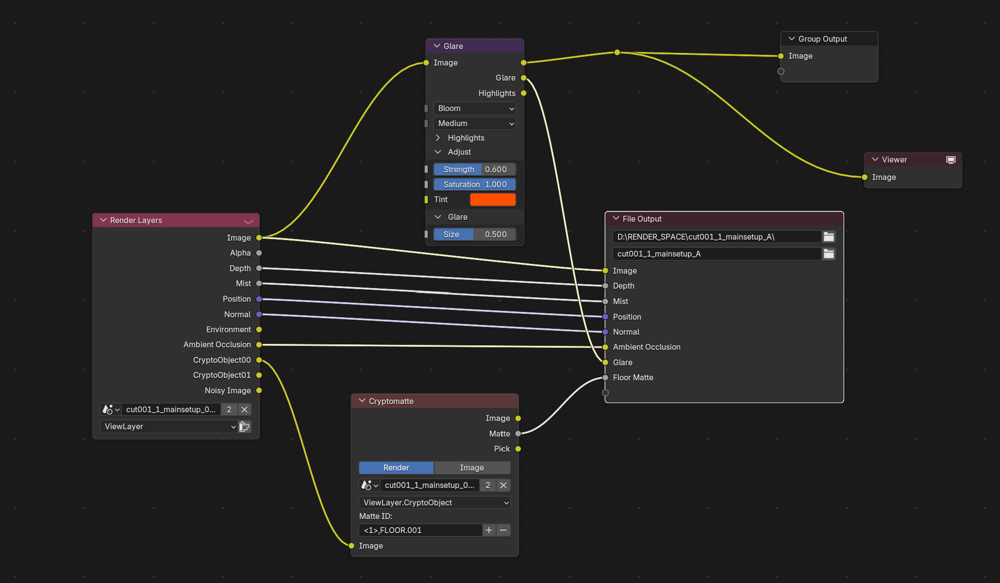

| レイヤー名 | 内容 |
|---|---|
| cut001_1_mainsetup | メイン背景（フレーム 1–720） |
| cut001_1_mainsetup_A | メイン背景（フレーム 721–2100、Cryptomatte 付き） |
| cut001_2_env | メイン HDR |
| cut001_3_leaves | 落ち葉 |
| cut002_1_karasu | カラス |
| cut002_2_envnorm | メイン HDR |
| cut002_3_envending | メイン HDR（暗） |
| cut002_4_mainsetup | メイン背景 |
| cut002_5_mainsetupdark | メイン背景（暗） |
| cut003_1_character | 化け物キャラクター |
| cut004_1_character | 化け物キャラクター |
| cut004_2_bgscene | メイン背景 |
| cut004_3_env | メイン HDR |
| cut005_1_room | 部屋本体（家具） |
| cut005_2_wall | 部屋の壁 |
| cut005_3_floor | 床 |
| cut005_4_cameraoverlay | カメラの前を覆うつる |
| cut005_5_floorspline | つる |
| cut005_6_shadowpass | 家具の影パス |
| cut005_7_positionpass | 位置パス |
| cut005_8_wallshielding | 壁シールディング |
b. サンプリング設定
サンプリング数を上げるとレンダリング時間が増大するが、下げるとノイズが出る。各ショットで 「デノイザーで自然に観察可能なノイズを除去できる最低限のサンプリング数」を模索した結果、 基本 16〜64 に抑え、影やマスクのみを出力するショットは 1 サンプリングで割り切った。
シーンが暗い場合デノイズのパフォーマンスが劣るため、レンダリング時は暗いライティングを避け、 想定と同じ色相・彩度のライティングを高めの明度で施し、コンポジットで暗くすることでデノイザーの効果を最大化した。 この結果、映像全体のクオリティを保ちながら総レンダリング時間を当初の 6〜10 倍短縮できた。
c. レンダリングエンジン併用
リアルなホラー体験のため基本はレイトレーサーの Cycles を採用しつつ、EEVEE の高速性も活用した。 画面の主体レイヤーは Cycles、影パスなど補助的なレイヤーや Cycles と EEVEE で差異が観察できないエフェクトは EEVEE でレンダリング。 クオリティ低下を防ぐため、EEVEE 採用を検討するレイヤーは数フレームを抽出し両エンジンで比較し、明らかな差異がない場合のみ EEVEE を採用した。 Cycles のレイトレーシングが想定外のライティング効果を生み、むしろ EEVEE の方が美術意図に合うケースもあった。
d. LOD
初回レンダリング時、BVH アクセラレータ構造の構築に異常に時間がかかり、調査の結果 背景樹木の膨大なポリゴン数がボトルネックであった。 カメラ距離を問わず同じ木のモデルを配置していたことが原因である。ジオメトリノードで簡易 LOD 切り替えシステムを構築し、 Decimate モディファイアで 3 段階の LOD モデルを作成、距離に応じて配置した結果、 BVH 構築時間が 約 3 割短縮した。
e. VRAM オーバーフロー
繊細な背景と説得力のあるリアリティのため、4K テクスチャを 40 枚近く使用している。そのためテクスチャロード時間が膨大になり VRAM が圧迫され、メインメモリへの退避により I/O 速度が急激に低下しボトルネックとなった。 テクスチャを 2K にダウングレードする対応も試みたが見た目に影響が出るため、4K のまま別の対策を講じることにした。
各レイヤー・各カットの出力は同一シーンの複数カメラではなく完全に異なるシーンに分けて撮影することで、 「そのレイヤーに必要なモデルとマテリアルのみを残し、それ以外を物理的に削除する」最適化を実施。 さらに Blender を長時間使用するとキャッシュがメモリに溜まる現象が確認されたため、重いシーンのレンダリング前後で Blender を再起動する運用とした。結果、VRAM 消費は大部分の時間で最大 11.6GB、 メインメモリ退避は最大 3GB に抑えられた。
コンポジット
レンダリング負荷を上げうる表現をなるべくコンポジットへ逃がし、 レンダリング出力の絵としての完成度を上げることを目指した。中心となるのは NukeX による Multi-layer OpenEXR を用いたマルチチャンネルコンポジットである。
a. マルチチャンネルコンポジット
プロローグのシネグラフィックス部分のモノクロ画像は、Blender からレンダーしたカラー画像を Nuke で加工したもの。 点滅するカラスの目は After Effects の loopOut エクスプレッションで実現した。

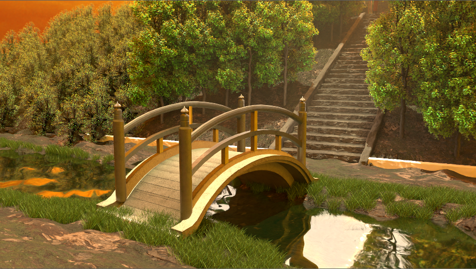
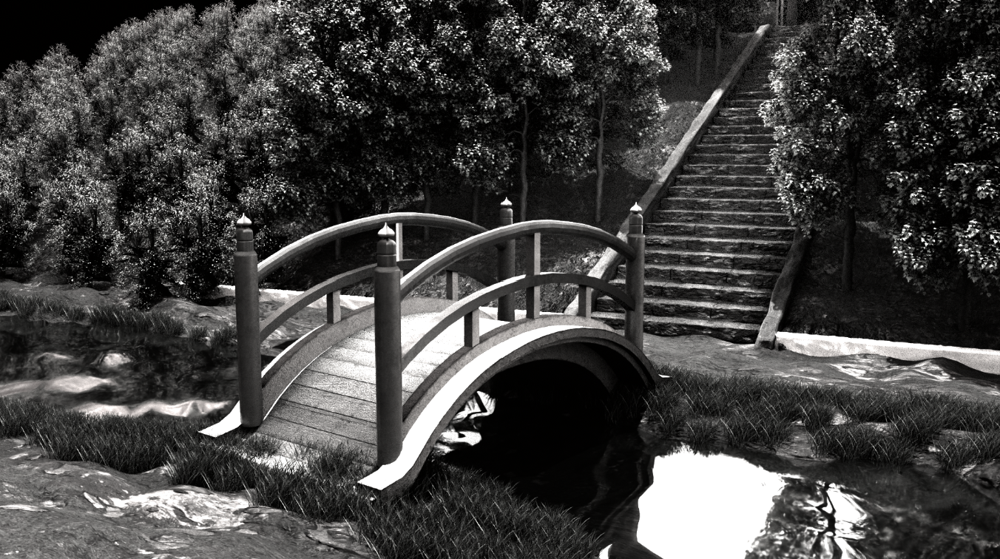

フォグ表現は Mist パスで実現した。Merge ノードでそのまま合成すると画面全体が白くボケ彩度が落ちてしまい、 夕暮れの空色に合わせ赤〜オレンジを乗算しても単調で平面的になった。Noise ノードで色にざらつきを加え表現を豊かにしたが 奥行き感が出ず、最終的に Position パスでオブジェクト位置に応じた色を Mist パスに乗算し、 擬似的な深度表現で空間的な豊かさを獲得した。
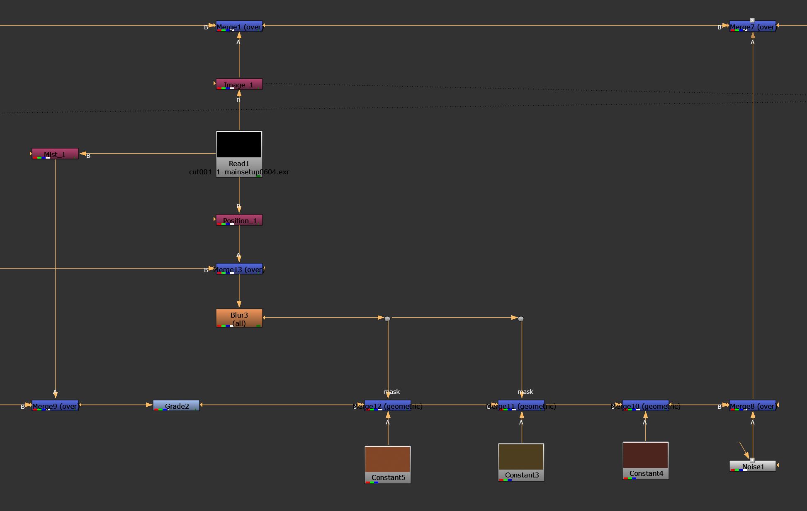


部屋シーンで床が液体化し机の足が浸る表現は、屈折・伝導の計算コストが高いため 3DCG ではなく Position パスによるコンポジットで実現した。机の Position パスの Z 軸のみを抽出し、 Color Adjustment でコントラストを調整、Z 軸位置の値とアルファチャンネルを紐付けることで、 床（液体）に近づくほど机の透明度が下がる擬似的な浸水表現を実現した。


バケモノキャラクターの髪は暗いライティング下で質感が失われ真っ黒に潰れていた。ライティング側で解決すると レンダリングコストが増大しシェーディング破綻のリスクもあるため、コンポジットで対応。 Beauty パスに Ambient Occlusion パスを合成したが白い AO パスにより不自然な明るさが出たため、 AO パスに赤色を乗算することで自然な反射を再現した。 また Diffuse Color パスに基づき、正しい色彩関係を保ったままキャラクターのみを明るくし背景との一体感を強めた。


落ち葉の表現もコンポジットで実現した。落ち葉は修正頻度が高く、そのたびに千フレーム以上ある背景を再レンダリングするのは 非効率であるため、別レイヤーとして扱った。背景モデルで葉が落ちうる範囲を Cryptomatte として書き出し、 NukeX でマスクとして葉をメイン背景に合成。影の深さが足りず浮いて見えた問題は Diffuse Light パスをずらし 色と透明度を調整することで解決し、縁の鋭さは微弱なぼかしで対処した。
b. カラー調整
暗い環境ではデノイザーの性能が落ちるため、レンダリングはなるべく明るいライティングで行い、 想定と同等の色相・彩度、あるいは中立色（白）のライティングで撮影し、後に NukeX で色調整する前提で制作した。
本作で暗い環境が中心となるのは神社シーン後半と部屋シーン。神社シーンは想定と同じ色相・彩度でレンダリングし、 NukeX の Color Adjustment で Gain を下げ、AO パス合成で影の立体感を強調した。 部屋シーンは調整のしやすさから中立色のライティングでレンダリングし、明度を下げて赤をオーバーレイすることで おぞましさを演出した。

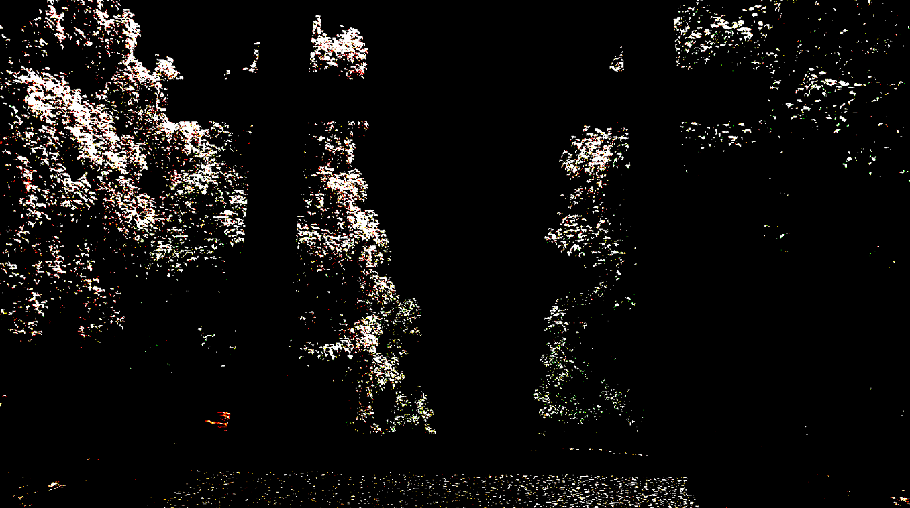

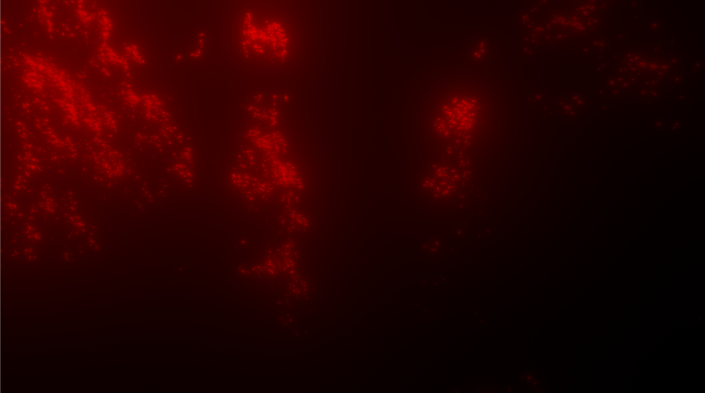
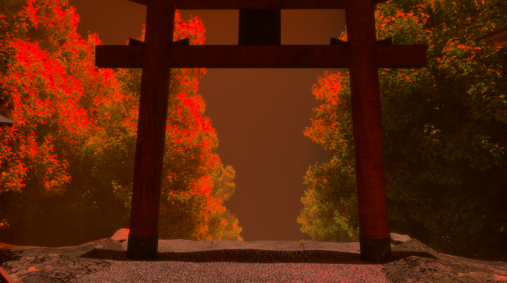

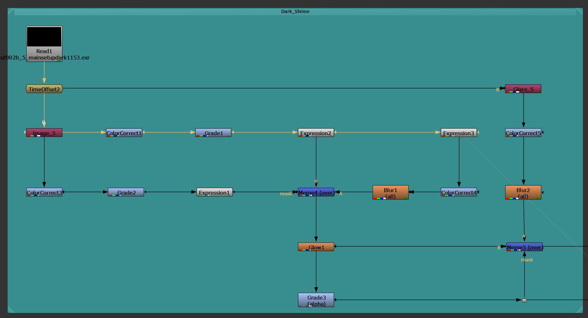
家具・壁・床は個別にカラー調整を行っている。机（木製）は光を散乱する性質から環境光の影響で全体が赤みを帯びるようにし、 壁の背後から襲う生体組織を目立たせるため、あえて赤みを落とすなど部位ごとに細かく対応した。

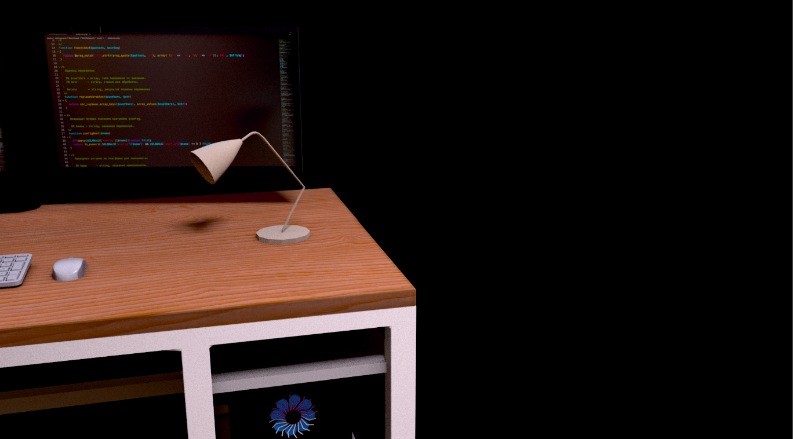

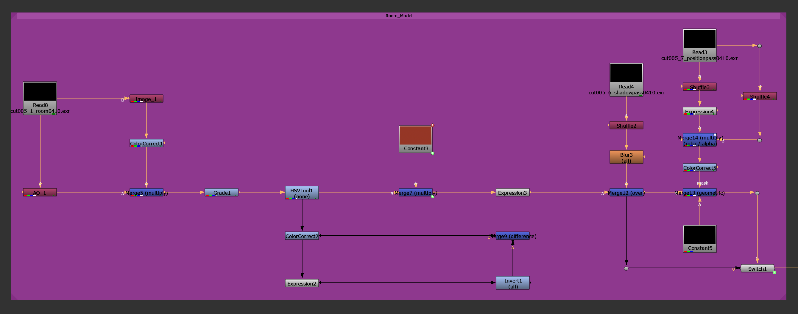
c. シーン遷移アニメーション
明るい夕暮れの空からまっ赤な不気味な空への遷移は「カラスの群れの飛行」で表現した。同一画面に全く異なる二つの環境が 登場するため Blender のみでの表現は困難であり、コンポジットで実現。カラスの群れの前線を基準に Roto Paint の範囲を 推し進め、そのマスクで夕暮れから不気味な赤空への移行を表現した。
レンダリング時にカラス数を増やすとポリゴン数増加で所要時間が伸びるため、 鳥の群れをコンポジットで複製し、スケール調整とぼかしで遠近感を出した。

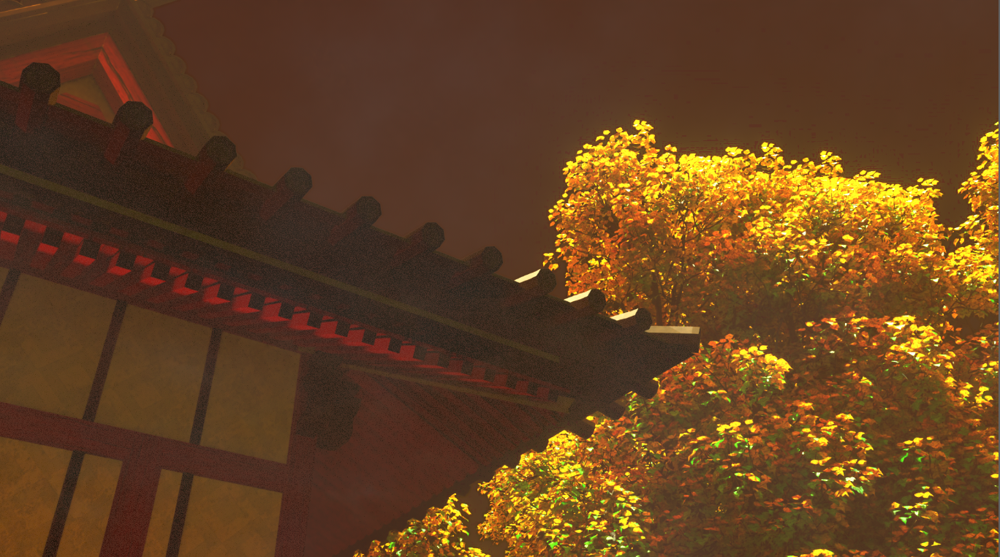

d. コンポジットを活用した応急措置
本作で使用した HDR 環境は Poly Haven の HDR Sky アセットをベースにしたワールドシェーダーだが、 シェーダー調整の過程で HDR の約 40% が白飛びし、雲の質感が失われていることをカット 2 後半のカメラ調整時に発見した。 ワールドシェーダーを変更するとメインのカット 1 のライティング整合性が崩れ、既存のシェーダーやカラーグレーディングの 再調整に膨大な時間がかかるため、NukeX での応急措置を選択した。
カット 2 では主人公が振り返る動作の中で、4 フレームほど「木だけが映り空がほとんど映らない」箇所があった。 この 4 フレームを利用し、天球を Z 軸中心に 170 度回転させることで、潰れた前方の空に正常な後方の空を映し出した。 170 度という角度は「同じ絵の使い回し」という違和感を観客に感じさせないよう試行錯誤の末に導いた数値である。
音響とオーディオ設計
POV 映像では主人公が画面に現れず視覚情報が減る分、「音」という情報の重要性が上がる。 音だけで映像の文脈を理解させ、作品の世界を味わってもらえるかが大きな課題であった。
a. 音効の立体感と臨場感 dearVR Pro 2
POV 映像の音効に重要なのは、主人公（＝鑑賞者）を中心とする立体感と包囲感である。 音の方向と位置を正確に定めるため dearVR Pro 2 プラグインを採用した。
階段のシーンでは山の静寂と広大さを演出するため 3 種類の鳥の鳴き声を重ねた。うち 2 種類は近い位置の左右に、 もう 1 種類は遠い位置に配置し、遠近感による空間のスケールを音声で表現。近い音源には Live Arena と Cathedral、 遠い音源には Concert Hall のリバーブを設定し、距離による減衰を再現した。
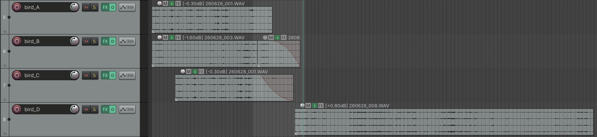
カラスが飛び去るシーンでは音源を頭部後方上に定位し、驚いて振り返るという主人公の行動に説得力を持たせた。 カラスの鳴き声を数十ミリ秒ずらして配置することで、不揃いな鳴き声の自然なランダムさと擬似的な反響のカオス感を再現している。
b. 音の演出
階段を登るにつれ足音の間隔と着地音を変化させ、疲労を感じる足取りを音で表現した。
カラスが飛び去り空が赤く染まった後、3 回の鈴の音に驚き周囲を見回るシーンでは「緊張感」を最大限に表現する工夫を施した。 鈴の音を ReaVerbate エフェクトで調整しスケール感を出すことで「どこにも遍在する怪異」という包囲感と絶望感を演出。 3 回の鈴の響きはそれぞれ 0.8 / 1.4 / 0.5 セミトーンピッチをずらし、バリエーションと同時に 不調和音による不安感を演出した。
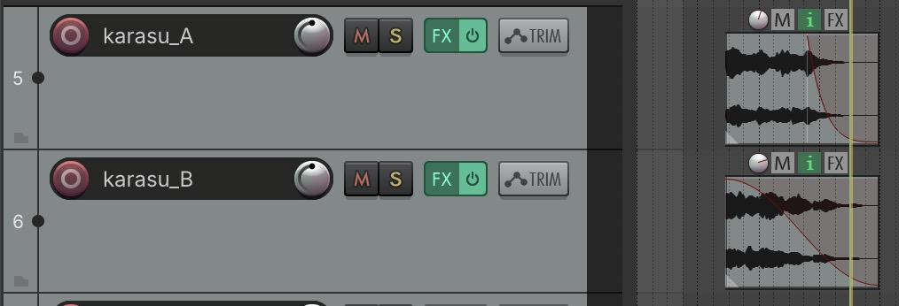
空色が変化した後、背景の鳥の鳴き声もより寂しさと鋭さを感じさせるものに変化させ、状況の異常感と危険感を表現した。
尺八の音と共に化け物が登場した後も音を消さず、AUReverb の Gain を 4.56 に設定し残響を極端に伸ばした。 カメラが化け物にゆっくり近づき至近距離で顔にズームインする映像と合わせ、「逃げられない」「催眠されている」 「宿命的な呪い」という雰囲気を醸成した。画面暗転後は 13000Hz と 17000Hz の高周波トーンを重ねた純音に近い音を流し、 視界喪失と耳鳴りだけが残る感覚を演出。17000Hz は聞こえる人と聞こえない人が分かれる周波数であり、 「人と機材の限界によって異なる音響体験」という実験的表現も狙っている。
c. オートメーション
映像の進行とキャラクターの行動による動きの表現は音響のオートメーションで実現した。 プロローグのシネマグラフィックス部分では、静止画のズームインに合わせてナレーションと BGM のボリュームを上げつつ 反響を調整し、空疎な響きを再現。ナレーションは Chorus と AUReverb で虚無感と神秘的な声質を演出し、 ReaEQ で周波数を微調整。BGM は ReaDelay で残響を表現し重厚感を演出した。
手水台の流水音も空間的に正しく再現している。主人公が鳥居をくぐった時点で小さいボリュームで再生を始め、 手水台からの距離によってボリュームが変化。手水台が常に正面にあるわけではないため、 相対的な方向の変化と推移も音響のオートメーションで再現した。
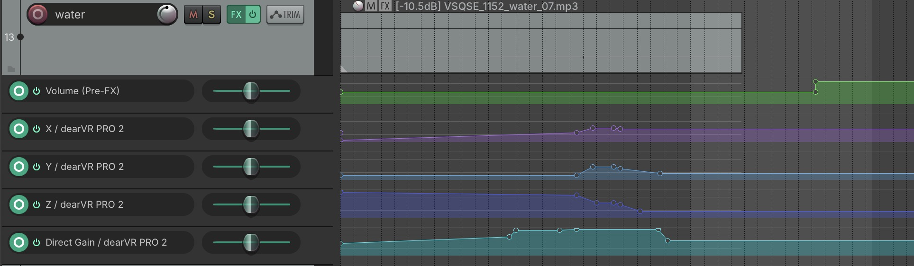
d. モーションに伴う音
POV 映像では主人公を直接見ることができないため、モーションに伴う音効の演出は説得力を上げる上で非常に重要である。 本制作ではモーションによる直接・間接の音、その発生強度、方向と位置の正確な再現を目指した。
足音は歩く地面の素材によって変えている。階段シーンでは硬めの足音をベースに砂利を踏む効果音を小さめでかけ、 人が歩く際の足の運びを考慮し砂利音を数十ミリ秒遅らせて重ねた。神社の境内では落ち葉に覆われた地面を想定し 硬めの足音に草を踏む効果音を重ね、落ち葉の大きさや枚数を考慮したバリエーションを加えた。 社殿の階段は清掃されたイメージのためはっきりとした硬い足音とした。
モーションのタイミングによっても音質を変化させている。階段の最後の段を降りた（登った）着地の瞬間は より力強い足音とした。部屋のシーンでは、主人公がベッドから降り足をつける際、両足が同時に着地することは少ないため 最初に着いた足の力強い音と、続く足の弱い音を再現している。